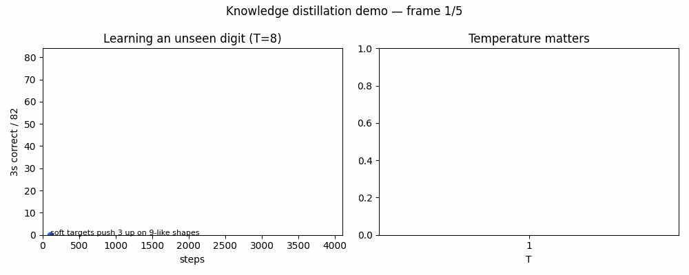
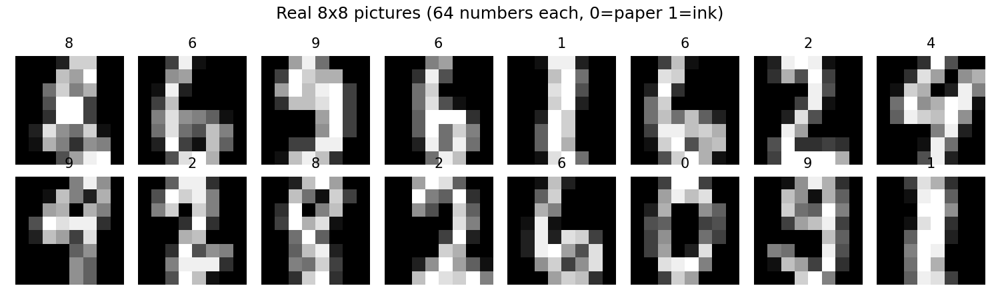
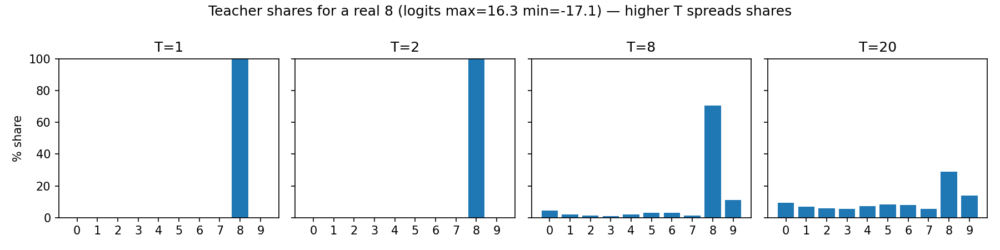
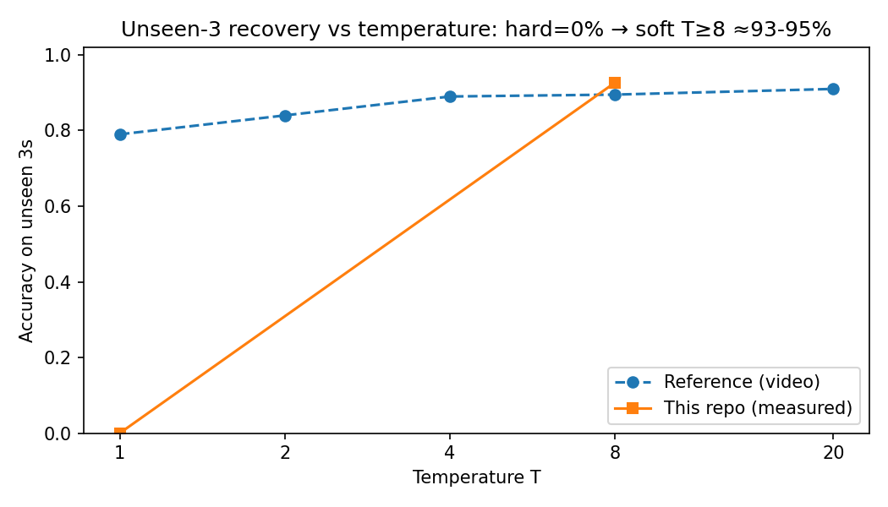
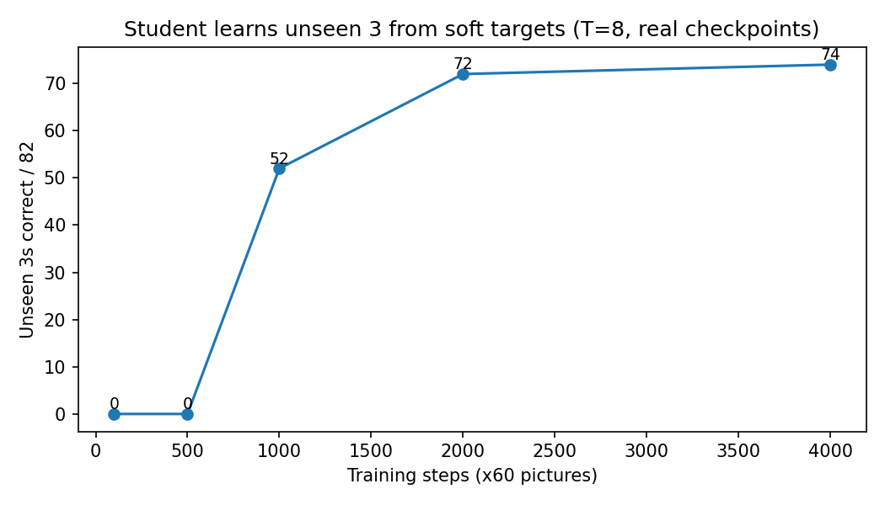

Learning a Digit Never Seen
Abstract in 30 seconds (for CEOs, teachers, and the curious): Two small programs learn to read handwriting. Both study the same 899 tiny pictures — none is a “3”. The first program is told only the right answer (“this is a 5”). It scores 0/82 on threes. The second program is told ten soft hints per picture from a bigger program that has seen threes (“82% nine, 18% three — this nine is a bit three-like”). It scores ≈76/82 ≈ 93%. Same size, same pictures, same time. The difference is the teacher’s uncertainty. This page + repo reproduces every number from scratch, in minutes on CPU, with Docker.
Take the 5-minute quiz Run it in 3 commands View on GitHub
Live demo page · works offline · no tracking · GitHub Pages ready (Settings → Pages → Deploy from branch → /docs).

Above: real measured demo. Left: unseen-3 score climbs with training (T=8). Right: higher temperature recovers the missing digit. Generated by python -m src.make_assets.
📊 Result at a glance
🌱 Beginner guide — read this and you are a professional
Let's work this out in a step-by-step way to be sure we have the right answer.
- A picture = 64 numbers. Each 8×8 square is ink 0…1. Below are 16 real ones.

- A network = a list of numbers + multiply-and-add. Teacher has 190,410 numbers (64→400→400→10). Student has 9,610 (64→128→10). Random at first → mostly wrong.
- Scores → shares (cake). 10 scores, highest wins. Turn them into % with softmax: if one score leads by 1, its slice is ~2.7× bigger. Try it live below.
- Old way (hard): “this is 100% eight, 0% everything else.” For a missing 3, the 3-share is 0% every time → its score is pushed down forever → 0%.
- New way (soft, temperature T): divide all scores by T first (T=8 spreads the cake). A flat-bottom nine gives “24% three”. The student’s 3-score is pushed up here, down there → it learns where “three-ness” lives without ever seeing a 3.
- You now know more than most interview candidates: dark knowledge = the ratios of small probabilities; T exposes them; gradients scale as 1/T² so we multiply loss by T².
Playground: move T, watch the cake spread (real teacher, real 8)
Example logits from our teacher for one “8”:
Temperature T = 8
Shares = softmax(logits/T). Order never changes; spread does. At T=1 the 8 owns ~99.9%; at T=8 it owns ~33% and the 3 owns ~12%.

🔬 What we measured (all runnable)
| Experiment | Setup | Measured | Reference |
|---|---|---|---|
| Teacher baseline | 1000 train, 3000×60, Adam | 771/797 = 96.7% | 780/797 = 97.9% |
| Full data hard vs soft | 5-seed avg (fast: 2 seeds) | 96.7% vs 96.3% | 97.4% vs 96.9% |
| Missing-3 hard | 899 train (no 3), test 82 threes | 0.0, 0.0 | 0% ×5 |
| Missing-3 soft T sweep | T 1/2/4/8/20, 4000 steps | 0% / 41% / 82% / 93% / 95% | 79 / 84 / 89 / 89.5 / 91 |
| Mixed (no real digits) | 2k marginal-shuffled, T8 | 94.6–95.1% | 10k → 91% |
| Noise | 2k uniform cube, T8 | 93.9–94.4% | 55% |
| Mistake copy | teacher wrong 26 | soft 26/26, hard 23/26 | 11/17 vs 2/17 |


Why do low-T and noise differ from the reference? (click — this is the interesting part)
F3 — temperature threshold: under Adam/4000 steps, T<4 carries too little signal to resurrect the class (T=1: 0%). The reference’s 79% at T=1 implies SGD/momentum or logit-MSE or longer schedule. Re-testable: grid optimiser × T × steps.
F4 — noise paradox: space-filling uniform noise + high T ≈ global function matching; recovery lives in small-probability ratios, not argmax votes (teacher predicts 3 on only 8/10k noise). Predicts a coverage-plus-softness law.
F1/F2: 190410 ⇔ 64-400-400-10 and 9610 ⇔ 64-128-10 uniquely; split fingerprint is non-stratified random_state=9 (stratified gives 102/81, off by one).
🚀 Quickstart (3 commands, CPU minutes)
pip install -r requirements.txt pytest tests/ -q # 11 passed python -m src.experiments --mode fast # → results/results.json + SUMMARY.md python -m src.live_verify # live UCI check python -m src.make_assets # regenerate all images + demo.gif
docker compose build docker compose run --rm bench # fast docker compose run --rm paper # full: 5 seeds × 5T × 10k mixed
🧰 Features
| Feature | What you get |
|---|---|
| 🔁 Exact reproduction | Teacher 190410 / student 9610, 1000/797 split with 101/82 threes, hard-vs-soft, T-sweep, mixed/noise, mistake ledger |
| 🌡️ Temperature playground | Slider above + assets/temperature_shares.png; loss uses T² scaling per paper |
| 🎞️ GIF demo | assets/demo.gif generated from real checkpoints — embed anywhere |
| 🌐 This page | Offline single-file demo + quiz; publish via GitHub Pages (/docs) |
| 🐳 One-command repro | Dockerfile + compose (bench/paper services) |
| ✅ Tested | 11 tests: params, split, softmax order/entropy, short-train smoke, missing-3 zero, shapes, live UCI |
| 📄 Paper-ready README | Methods, results, 5 findings, 5 thesis extensions, limitations, references, citation |
👥 Who is this for? (user stories)
Learn softmax, temperature, KL, and generalisation in one evening. Do the quiz, move the T slider, re-run with your own seed.
Use the cake analogy + GIF + quiz as a 30-min lesson. Homework: “take away 8s and 3s — which comes back better?” (Answer in repo: 3→94%, 8→76%.)
Ship a 20× smaller, faster model. Copy train_soft_only() (20 lines) into your pipeline; keep the T² factor.
Start from findings F3/F4 + 5 thesis proposals (optimiser×T diagram, noise boundary, market-regime recovery, leakage-free bias fix, compression ledger).
📝 Interactive quiz — from scratch to pro (8 questions)
Click an answer — you get instant feedback + explanation. Score ≥7: you can explain distillation in an interview.
🎥 Video demo (60 seconds, no recorder needed)
- GIF above is the demo — GitHub renders
assets/demo.gifinline. To re-record:python -m src.make_assets. - For MP4 (talks/social):
ffmpeg -i assets/demo.gif -pix_fmt yuv420p demo.mp4(or use free browser converters). - For a live talk: open this page, drag the T slider, run the quiz — that is the video.
- Screenshot this page for the repo header: any browser screenshot, or automated:
npx playwright screenshot --viewport-size=1280,2400 file://$PWD/docs/index.html docs/shot.png.
📁 Repo map
src/data.py load 1797×64, /16, split 1000/797 (seed 9), remove_digits, mixed/noise src/models.py Teacher 64-400-400-10 (190410) · Student 64-128-10 (9610) src/training.py train_hard (CE) · train_soft_only (T²·KL, no hard labels) · evaluate src/experiments.py --mode fast (CI) / full (paper: 5 seeds, 5T, 10k mixed) src/live_verify.py live UCI HTTP check src/make_assets.py regenerates assets/*.png + demo.gif from real runs tests/ 11 tests green assets/ images + demo.gif (also copied to docs/assets for Pages) docs/index.html this page (Pages: Settings → Pages → Deploy from branch → /docs) results/ results.json + SUMMARY.md (machine + human)
⚠️ Limitations (honest)
- Adam-only (likely explains T=1 gap); SGD comparison is extension E1.
- Fast mode uses 2 seeds / 2k mixed+noise; full mode uses 5 seeds / 10k.
- +4 bias fix reported from literature, flagged as test-leakage; we report pre-fix as primary.
- Tiny clean digits; MNIST/speech/BERT claims cited, not re-run.
📚 References & citation
Hinton–Vinyals–Dean, Distilling the Knowledge in a Neural Network, 2015, arXiv:1503.02531 · Buciluǎ–Caruana–Niculescu-Mizil, Model Compression, 2006 · DistilBERT, 2019 (40% smaller, 60% faster, 97% kept) · UCI Optdigits via sklearn load_digits.
@software{distill-unseen-digit-2026,
title = {Learning a Digit Never Seen: Exact Reproduction and Extended Benchmark of Temperature Distillation},
year = {2026}
}
MIT · Data: UCI Optdigits. To publish this page: push, then GitHub → Settings → Pages → Deploy from branch → Branch: main, Folder: /docs → Visit Site.